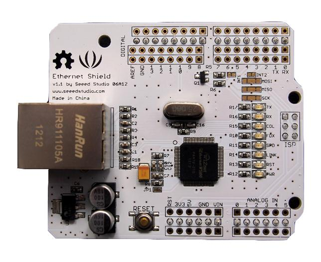
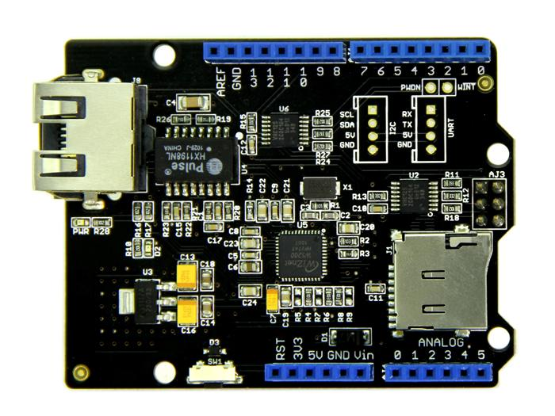

The Arduino Ethernet Shield allows an Arduino board to connect to the internet. It is based on the Wiznet W5100/W5200 ethernet chip providing a network (IP) stack capable of both TCP and UDP. Use the Ethernet library to write sketches which connect to the internet via a RJ45 Ethernet jack.
 |
 |
 |
Here lists the comparison among various versions of Ethernet Shield:
| Parameter | Seeeduino Ethernet | Ethernet Shield V1.0 | Ethernet Shield V2.0 |
|---|---|---|---|
| Working Voltage | +6.2V~+13V | +5V | +5V |
| Control Mode |
armed with a MEGA328P chip (do not need seeeduino/Arduino) |
Control by seeeduino/Arduino | Control by seeeduino/Arduino |
| TCP/IP Ethernet Controller | Wiz5100 | Wiz5100 | Wiz5200 |
| power supply mode | Extern power | 5V pin of Arduino/Seeeduino | 5V pin of Arduino/Seeeduino |
| Standard Shield | Yes | No | Yes |
| SD Card Socket | Support Micro SD card in FAT16 or FAT32, maximum storage is 2GB. | No | Support Micro SD card in FAT16 or FAT32, maximum storage is 2GB. |
| Grove Connector | UART and IIC Connector | No | UART and IIC Connector |
| Ethernet jack | Minimal RJ45 | Standard RJ45 | Minimal RJ45 |